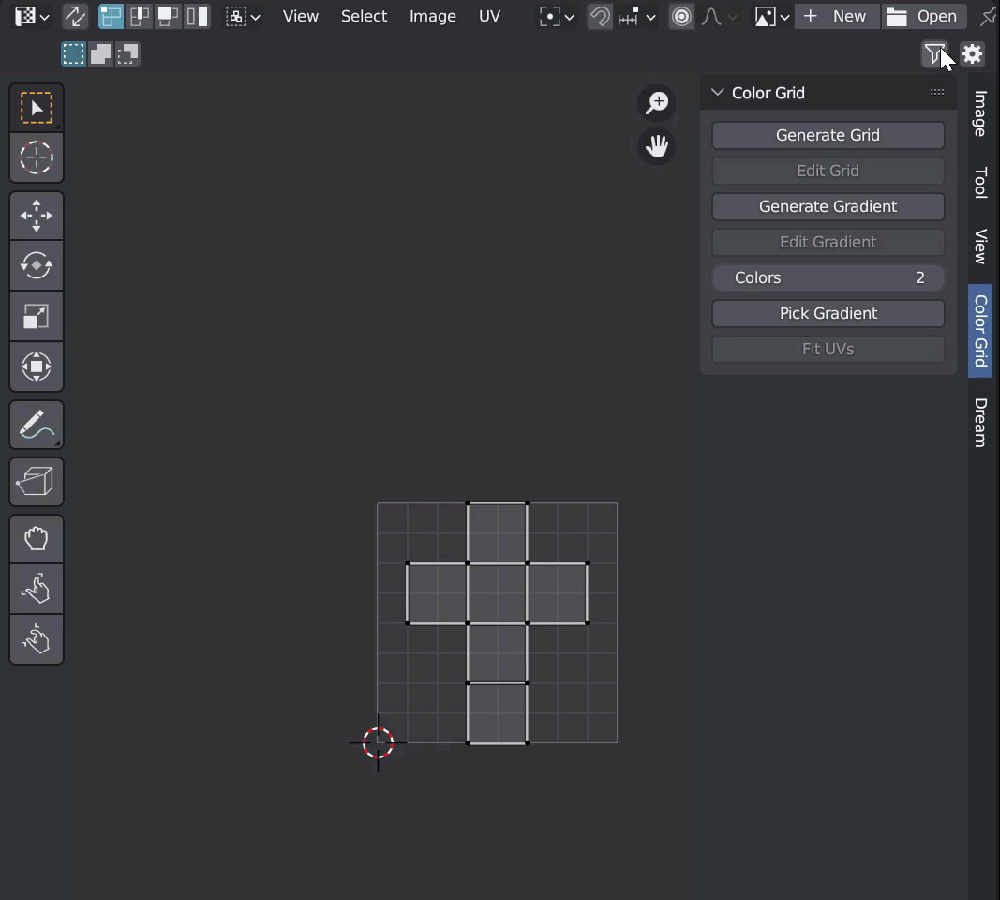
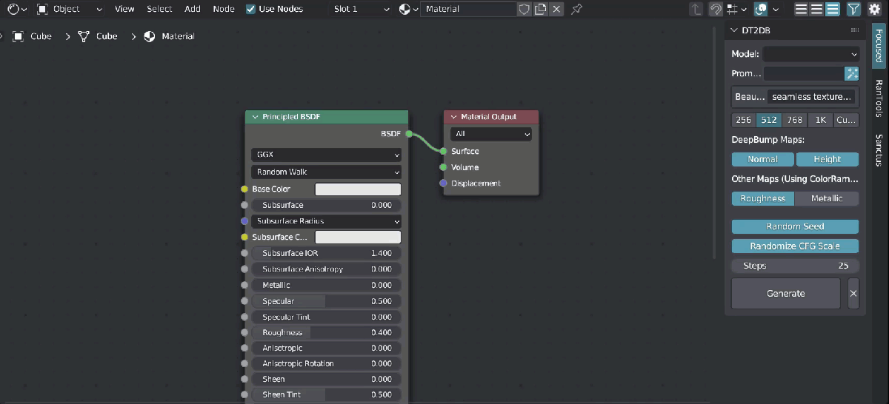
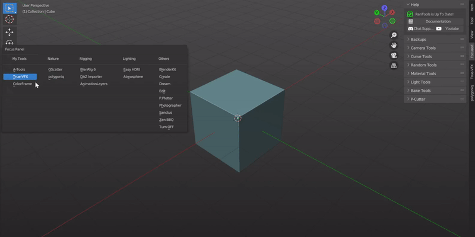
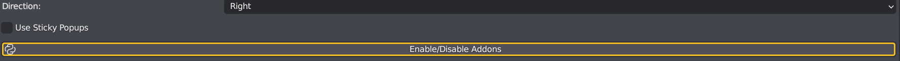

Changelog
V5.0.0:
Enhanced Image and Node Space Support: Now, Clean Panels offers Filtering and Focused Panel support for both Image/UV and Node space, ensuring a seamless experience in your creative workflow.  
Easier to manage categories with new checkbox style pop-up:
 Internal Tab Filtering:
Witness the cleanest N-Panel ever with the ability to filter internal tabs (excluding the Item tab in the viewport). Enjoy a clutter-free workspace tailored to your needs.
Enable this in under Show Advanced Options and you should see internal tab names in the popup.
Internal Tab Filtering:
Witness the cleanest N-Panel ever with the ability to filter internal tabs (excluding the Item tab in the viewport). Enjoy a clutter-free workspace tailored to your needs.
Enable this in under Show Advanced Options and you should see internal tab names in the popup.
You should then see the internal tabs listed in the popup:

Online Database for Pre-built Categories:
Access an online database to effortlessly fetch pre-built categories, saving you time and effort in organizing your workspace.
 Automatic Config Backups:
Never worry about losing your configurations again. Clean Panels now features automatic config backups, and you can import backups at the click of a button.
Automatic Config Backups:
Never worry about losing your configurations again. Clean Panels now features automatic config backups, and you can import backups at the click of a button.
 Revamped Update Check System:
Stay up-to-date with Clean Panels effortlessly. The new update check system aligns with other addons, offering finer control over when updates are checked for Clean Panels. Enjoy a more seamless and personalized update experience.
Revamped Update Check System:
Stay up-to-date with Clean Panels effortlessly. The new update check system aligns with other addons, offering finer control over when updates are checked for Clean Panels. Enjoy a more seamless and personalized update experience.

some minor improvements and bug fixes!
V4.0.0:
We got rid of the ‘DUMP’ tab which was confusing a lot of users.
You can now organize your Focus Panel list by creating categories.  You can now have separate sets of categories enabled for separate workspaces.
Quick Addon Enable/Disable Panel  and a lot of bug fixes and small updates.